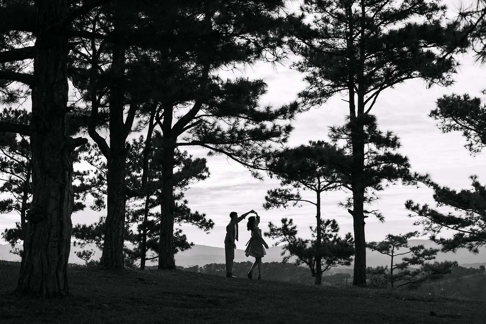
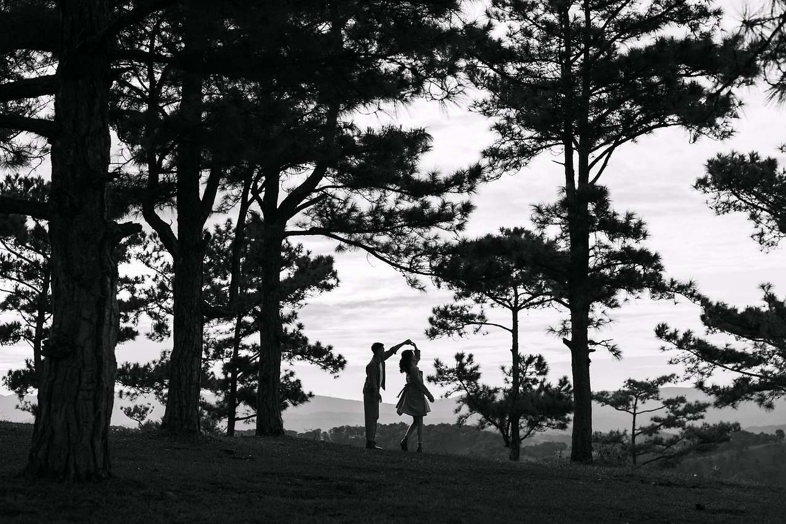
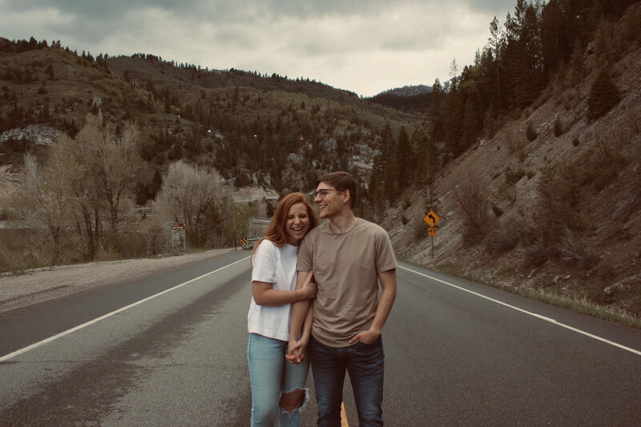

Header
Welcome to my corner of the web! I'm a passionate enthusiast hailing from the beautiful state of Wisconsin. My love for music, technology, and photography has been the driving force behind my creative journey. Growing up amidst the picturesque landscapes of Wisconsin, I developed a keen eye for capturing the beauty of everyday moments through my lens. Whether it's the serene lakes, vibrant fall foliage, or the bustling cityscapes, each click of my camera shutter tells a story. Music, my constant companion, adds a rhythm to my life, inspiring my creative processes and fueling my passion for innovation.
Technology has always fascinated me, serving as a bridge to endless possibilities. From coding my first program to exploring the latest advancements in digital photography, I find immense joy in merging technology with creativity. This blend allows me to not only capture stunning images but also to present them in unique and interactive ways. My journey is all about exploring new horizons, pushing the boundaries of creativity, and sharing my perspective with the world. Thank you for joining me on this adventure, and I hope my work resonates with you as much as it does with me.